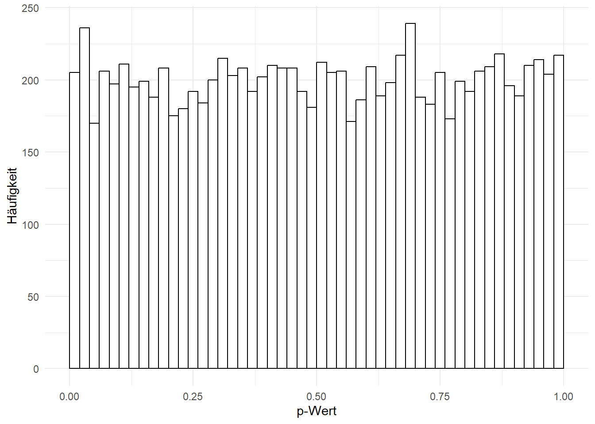
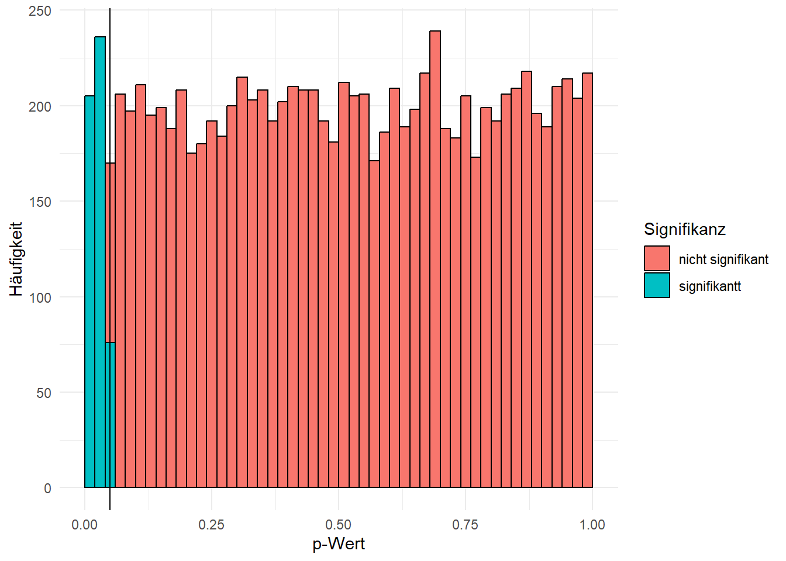

5 Hypothesen und Testtheorie
In diesem Kapitel werden wir uns ein bisschen mit der Theorie hinter der Statistik befassen. Das Ziel ist nicht, dass Sie im Anschluss in der Lage sind, mathematische Formeln wiederzugeben, sondern dass Sie einige wichtige Konzepte verstehen.
5.1 Hypothesen
Ganz allgemein gesprochen, verstehen wir unter einer Hypothese eine allgemeine Aussage über einen vermuteten Zusammenhang zwischen empirischen oder logischen Sachverhalten. In unserem Kontext gelten drei Anforderungen an Hypothesen:
- Sie dürfen keine Einzelfälle beschreiben.
- Sie müssen die Struktur eines sinnvollen Konditionalsatzes aufweisen (z.B. wenn-dann, je-desto). Diese ist logisch notwendig, muss aber nicht zwingend expliziert formuliert sein.
- Sie müssen falsifizierbar sein.
Falsifizierbarkeit
Falsifizierbarkeit bedeutet im Kern nichts anderes, als dass wir in der Lage sein müssen, die Hypothese zu widerlegen. In der Forschungspraxis bedeutet das konkret, dass wir in der Lage sein müssen, Daten zu erheben, anhand derer wir die Hypothese testen können.
Grundsätzlich können Sie immer eine Hypothese aufstellen, wenn Sie eine ganz konkrete Annahme haben. Allerdings entspricht es guter wissenschaftlicher Praxis, dass Sie Ihre Hypothesen aus dem aktuellen Forschungsstand Ihres Themas, d.h. aktuellen Theorien und verwandten empirischen Befunden, ableiten. Beispielsweise entspricht die Hypothese “Am Freitag schmeckt das Essen in der Mensa der Uni Erfurt schlechter als an den anderen Wochentagen” den oben genannanten Annforderungen. Allerdings handelt es sich dabei um nicht viel mehr als einen auf meiner Wahrnehmung beruhenden flüchtigen Gedanken.
5.1.1 Arten von Hypothesen
In den nachfolgenden Abschnitten werden wir uns anschauen, wie verschiedene Hypothesen differenziert werden können.
5.1.1.1 Null- und Alternativhypothese
Einen ersten Unterschied, den Sie kennen sollten, ist der zwischen Null- und Alternativhypothese. Manchmal werden die beiden auch als H0 und H1 bezeichnet. Letztere ist immer das, was Sie inhaltlich eigentlich annehmen. Die Nullhypothese besagt dagegen, dass Ihre Annahme nicht zutrifft. Die Nullhypothese ist deshalb wichtig, weil die statistischen Verfahren, die Sie in dieser Veranstaltung lernen werden, nicht die Alternativ-, sondern die Nullhypothese testen. Streng genommen gelten die oben genannten Kriterien also in erster Linie für die Nullhypothese. Das gilt insbesondere für die Falsifizierbarkeit!
Stellen wir uns einmal vor, dass Sie annehmen, dass jüngere Menschen mehr Zeit mit der Nutzung sozialer Medien verbringen als ältere Menschen. Eine mögliche Formulierung der Alternativhypothese lautet:
H1: Es besteht ein Zusammenhang zwischen dem Alter und der Nutzung sozialer Netzwerke.
Dagegen lautet die Nullhypothese:
H0: Es besteht kein Zusammenhang zwischen dem Alter und der Nutzung sozialer Netzwerke.
5.1.1.2 Gerichtete und ungerichtete Hypothesen
Ein weiterer wichtiger Aspekt, nach dem Sie Hypothesen unterscheiden können, ist, ob diese gerichtet oder ungerichtet sind. Gerichtet sind Hypothesen immer dann, wenn Sie eine Vermutung über die Richtung eines Zusammenhangs haben. Ungerichtet bedeutet dagegen, dass Sie einfach nur annehmen, dass es einen Zusammenhang gibt, ohne zu vermuten, wie genau dieser ausfällt. Nehmen wir noch einmal das Beispiel von oben. Im Text haben wir gesagt, dass Sie vermuten, dass jüngere Menschen mehr Zeit mit der Nutzung verbringen als ältere. Das ist ein Beispiel für eine gerichtete Hypothese, da wir eine Vermutung darüber haben, welche Personen mehr bzw. weniger Zeit mit der Nutzung verbringen. Die Formulierung der H1 im Beispiel oben ist dagegen ungerichtet, da nur gesagt wird, dass ein Zusammenhang besteht. Formulieren wir die Hypothese also um:
H1: Jüngere Menschen verbringen mehr mit der Nutzung sozialer Netzwerke als ältere Menschen.
Entsprechend ändert sich auch die H0:
H0: Jüngere Menschen verbringen nicht mehr mit der Nutzung sozialer Netzwerke als ältere Menschen.
Beachten Sie, dass diese Nullhypothese nicht nur dann falsifiziert wird, wenn es keinen Zusammenhang zwischen dem Alter und der Nutzung sozialer Netzwerke gibt, sondern auch, falls es zwar einen Zusammenhang gibt, dieser aber in die entgegengesetzte Richtung läuft. Also Menschen mehr Zeit mit der Nutzung verbringen, je älter sie sind.
5.1.1.3 Hypothesen über Zusammenhänge und Unterschiede
Die meisten Hypothesen, die Sie während Ihres Studiums aufstellen und testen werden, befassen sich entweder mit Zusammenhängen, so wie im bisherigen Beispiel, oder mit Unterschieden zwischen (mindestens) zwei Gruppen. Solche Hypothesen sind immer dann sinnvoll, wenn Sie entweder an Differenzen zwischen natürlich auftretenden Gruppen interessiert sind (z.B. Studierende vs. Azubis, Arbeitnehmerinnen und Arbeitnehmer vs. Selbstständige, Menschen aus Europa vs. den USA) oder wenn Sie im Rahmen eines Experiments die Unterschiede zwischen einer Experimental- und einer Kontrollgruppe untersuchen. Oder anders gesagt: Hypothesen über Unterschiede sind immer dann sinnvoll, wenn Ihre Hypothese eine Aussage über Gruppen enthält, die Sie mit einer nominalen Variable messen können.
Schauen wir uns mal ein Beispiel für eine Hypothese über Unterschiede an. Es gelten dieselben Kriterien wie oben:
H1: Menschen im Ruhestand und Menschen, die nicht im Ruhestand sind, schauen unterschiedlich oft lineares Fernsehen.
Diese Hypothese beschreibt einen vermuteten Unterschied zwischen Rentnerinnen und Rentnern und allen anderen Menschen. Gleichzeitig ist es eine ungerichtete Hypothese, da sie keine Annahme darüber enthält, welche der beiden Gruppen häufiger (bzw. seltener) lineares Fernsehen schaut. Die zugehörige H0 lautet dementsprechend:
H0: Menschen im Ruhestand und Menschen, die nicht im Ruhestand sind, schauen gleich oft lineares Fernsehen als Menschen.
Würden wir stattdessen davon ausgehen, dass Rentnerinnen und Rentner häufiger klassisches Fernsehen schauen (z.B. weil sie einfach mehr Zeit haben), könnten wir die folgende gerichtete Alternativhypothese mit zugehöriger Nullhypothese aufstellen.
H1: Menschen im Ruhestand schauen öfter lineares Fernsehen als Menschen, die nicht im Ruhestand sind.
H0: Menschen im Ruhestand schauen nicht öfter lineares Fernsehen als Menschen, die nicht im Ruhestand sind.
5.1.2 Statistische Hypothesen
Bisher haben wir uns in erster Linie mit inhaltlichen Aspekten von Hypothesen beschäftigt. Als Nächstes werfen wir einen Blick darauf, welche statistischen Annahmen hinter den Hypothesen stecken.
Im Fall von Hypothesen über Zusammenhänge wird in der Regel ein Maß berechnet, das etwas über die Stärke eines Zusammenhangs aussagt, z. B. einen sogenannten Korrelationskoeffizienten (dazu im übernächsten Kapitel mehr). Bei ungerichteten Hypothesen lautet die Nullhypothese immer, dass dieses Maß genau den Wert 0 annimmt. Schauen wir uns das am Beispiel von oben an. Inhaltlich haben wir dort die folgende Alternativ- bzw. Nullhypothese aufgestellt:
H1: Es besteht ein Zusammenhang zwischen dem Alter und der Nutzung sozialer Netzwerke.
H0: Es besteht kein Zusammenhang zwischen dem Alter und der Nutzung sozialer Netzwerke.
Die zugehörigen statistischen Hypothesen sehen Sie untenstehend. r ist dabei ein Platzhalter für das Zusammenhangsmaß:
statistische H1: \(r_{Alter,~Nutzung~sozialer~Medien} \neq 0\)
statistische H0: \(r_{Alter,~Nutzung~sozialer~Medien} = 0\)
Wie oben angedeutet, verhält es sich bei gerichteten Hypothesen etwas anders, da die Nullhypothese nur aussagt, dass die Richtung nicht zutrifft. Dort hatten wir die folgenden Hypothesen aufgestellt:
H1: Jüngere Menschen verbringen mehr Zeit mit der Nutzung sozialer Netzwerke als ältere Menschen.
H0: Jüngere Menschen verbringen nicht mehr mit der Nutzung sozialer Netzwerke als ältere Menschen.
In diesem Fall gehen wir von einem negativen Zusammenhang aus. Das bedeutet nichts anderes, als dass kleinere Messwerte in der einen Variable (das Alter) mit höheren Werten in der anderen Variable (die Nutzung sozialer Medien) einhergehen. Würden wir das Gegenteil vermuten, also dass eher ältere Menschen mehr Zeit mit der Nutzung sozialer Medien verbringen, würden wir einen positiven Zusammenhang annehmen (hohe Werte gehen mit hohen Werten einher). Daraus folgt, dass die Nullhypothese nicht aussagt, dass es keinen Zusammenhang gibt, sondern, dass es entweder keinen oder einen positiven Zusammenhang gibt. Anders gesagt: keinen negativen Zusammenhang. Die statistischen Hypothesen lauten also wie folgt:
statistische H1: \(r_{Alter,~Nutzung~sozialer~Medien} < 0\)
statistische H0: \(r_{Alter,~Nutzung~sozialer~Medien} \ge 0\)
Im Fall von Hypothesen über Unterschiede verhält es sich im Prinzip ähnlich. Allerdings müssen wir hier definieren, was genau wir eigentlich mit einem Gruppenunterschied meinen. In der Regel ist das der Mittelwert. Wir gehen also davon aus, dass der Mittelwert der einen Gruppe größer oder kleiner ist als der Mittelwert der anderen Gruppe. Für unsere ungerichtete Hypothese von oben sieht das entsprechend so aus, wobei M eine Abkürzung für Mittelwert ist:
statistische H1: \(M_{Fernsehnutzung,~Ruhestand} \neq M_{Fernsehnutzung,~kein~Ruhestand}\)
statistische H0: \(M_{Fernsehnutzung,~Ruhestand} = M_{Fernsehnutzung,~kein~Ruhestand}\)
Die gerichtete Version dieser Hypothese lautet dagegen wie folgt:
statistische H1: \(M_{Fernsehnutzung,~Ruhestand} > M_{Fernsehnutzung,~kein~Ruhestand}\)
statistische H0: \(M_{Fernsehnutzung,~Ruhestand} \le M_{Fernsehnutzung,~kein~Ruhestand}\)
Die Grundlagen der statistischen Hypothesen sind wichtig, weil sie das abbilden, was Sie mit statistischen Verfahren eigentlich testen! Allerdings ist eher unüblich, statistische Hypothesen in Abschlussarbeiten oder gar wissenschaftlichen Veröffentlichungen zu schreiben. Selbst die Nullhypothese werden Sie dort in der Regel nicht antreffen. Stattdessen reicht es in der Regel, die Alternativhypothese aufzuschreiben. Sofern diese anständig formuliert ist, impliziert sie sowohl die statistische als auch die Nullhypothese.
5.2 Testtheorie
5.2.1 p-Werte
Im Lauf der kommenden Wochen werden wir verschiedene Verfahren kennenlernen, mit denen Sie Hypothesen testen können. Die Idee dahinter ist aber immer dieselbe: Unsere Daten bilden (in der Regel) nur eine Stichprobe der Grundgesamtheit ab. Das Ziel eines Hypothesentests liegt darin, zu prüfen, ob die von uns beobachteten Zusammenhänge bzw. Unterschiede auch in der Grundgesamtheit zu erwarten sind. Die Verfahren werden unter dem Begriff Inferenzstatistik zusammengefasst und enthalten jeweils einen sogenannten Signifikanztest. Damit prüfen wir, ob wir H0 verwerfen müssen, H1 wird also immer nur indirekt getestet. Die Entscheidung darüber, ob H0 verworfen wird, basiert auf sogenannten p-Werten, die von den Signifikanztests berechnet werden.
Was nun folgt, ist eine etwas sperrige Definition (Spoiler: Davon gibt es in der Statistik leider sehr viele!):
p-Wert
Der p-Wert gibt an, wie wahrscheinlich es ist, die beobachteten Daten oder noch extremere Daten, zu beobachten, falls die Nullhypothese zutrifft.
Schauen wir uns diese Definition mal im Detail an: Der p-Wert gibt eine Wahrscheinlichkeit an (das p steht für “probability”) und liegt daher immer zwischen 0 (sehr, sehr unwahrscheinlich) und 1 (extrem wahrscheinlich). Der Definition können wir entnehmen, dass diese Wahrscheinlichkeit aussagt, wie wahrscheinlich die von uns beobachteten Daten sind, falls die Nullhypothese zutrifft. Wenn diese Wahrscheinlichkeit sehr gering ist, üblicherweise kleiner als 5% (der berechnete p-Wert also kleiner als 0,05 ist), sagen wir, dass ein Ergebnis statistisch signifikant ist. Wenn Sie also einmal einen statistischen Test berechnen und einen entsprechend kleinen p-Wert sehen, können Sie sich relativ sicher sein, dass die Nullhypothese verworfen werden kann, also nicht zutrifft. Sie wurde dann falsifiziert. Das bedeutet zwar nicht automatisch, dass unsere Alternativhypothese zutrifft, aber mangels besserer Informationen können wir vorerst so tun, als wäre dies der Fall.
5.2.2 Fehlschlüsse
Warum aber diese 5 %? Diese Zahl ergibt sich aus der Logik, die dieser Art von Statistik zugrunde liegt. Die Idee ist, dass wir als Forscherinnen und Forscher versuchen, langfristig nur in 5% der Fälle fälschlicherweise davon ausgehen wollen, dass es einen Effekt (also einen Unterschied oder einen Zusammenhang) gibt, obwohl dem nicht der Fall ist. Diese Art von Fehlschluss nennen wir auch Alpha-Fehler oder Fehler 1. Art. Die 5 % sind dabei reine Konvention!
Diese Fehler kommen zustande, weil p-Werte gleichverteilt sind, wenn die H0 zutrifft. Wenn es also keinen Unterschied oder Zusammenhang gibt, werden wir trotzdem in 5 % der Fälle ein statistisch signifikantes Ergebnis bekommen. Stellen wir uns einmal vor, wir würden eine der Hypothesen oben 10.000 Mal testen und die berechneten p-Werte aufschreiben und anschließend grafisch darstellen. Das Ergebnis könnte so aussehen:
Wie Sie sehen, sind die p-Werte gleichverteilt. Das heißt, Werte zwischen 0 und 0,05 sind genauso häufig wie Werte zwischen 0,95 und 1 oder 0,73 und 0,78. Da wir gesagt haben, dass Werte zwischen 0 und 0,5 als statistisch signifikant gelten, würden wir also in ca. 5 % der Fälle einen Fehlschluss ziehen.

Genauso, wie wir fälschlicherweise zu dem Schluss gelangen können, dass es einen Effekt gibt, obwohl dies nicht der Fall ist, können wir einen realen Effekt nicht finden und entsprechend darauf schließen, dass es ihn nicht gibt (bzw. dass H0 zutrifft). Wir sprechen dann von einem Beta-Fehler oder auch Fehler 2. Art. Diese Art von Fehler kann zwar grundsätzlich verschiedene Ursachen haben, allerdings hängt die Wahrscheinlichkeit, einen solchen Fehler zu begehen, in erster Linie mit der Stichprobengröße zusammen. Es gilt: Je größer die Stichprobe, desto höher ist die Wahrscheinlichkeit, einen Effekt zu finden, sofern dieser tatsächlich existiert. Man spricht auch von der statistischen Power eines Tests.
Auch hier gibt es wieder eine Konvention: Studien (bzw. die darin enthaltenen Tests) sollten mindestens 80% Power haben, also einen in der Realität existierenden Effekt in 4 von 5 Fällen identifizieren können. Online werden Sie für die Verfahren, die wir in den kommenden Wochen kennenlernen werden, oftmals Faustregeln zur Stichprobnengröße finden, um diese Power zu erreichen. Z.B.ca. 30 Personen pro Gruppe, wenn ein t-Test gerechnet werden soll (was das ist, werden wir noch lernen!). Solche Faustregeln sind meistens relativ alt, also aus einer Zeit, in der es sehr schwer und kostspielig war, Forschung mit Menschen zu betreiben. Sie sollten daher besser vermieden werden. Zwar gibt es Verfahren, mit denen bestimmt werden kann, wie groß Ihre Stichprobe sein muss, um auf 80% Power zu kommen, aber diese werden wir uns in dieser Veranstaltung nicht anschauen. Wenn Sie im Rahmen eines Forschungsprojektes im Studium eine Stichprobe rekrutieren sollen, sprechen Sie daher am besten mit Ihrem Betreuer oder Ihrer Betreuerin, um zu klären, wie groß die Stichprobe sein sollte und was für Sie in Ihrem Forschungskontext realistisch ist!